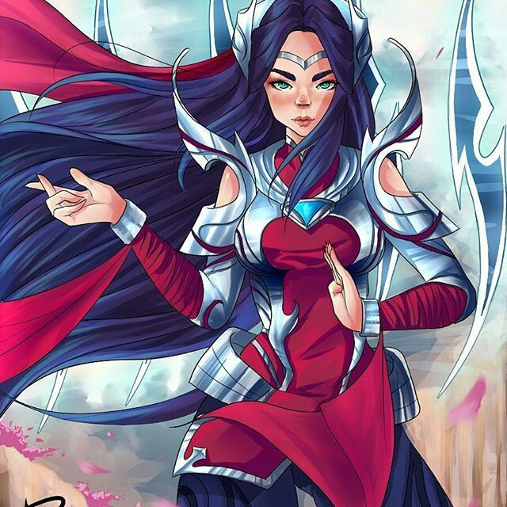
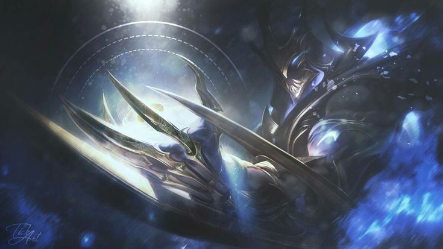

Bem vindo ao meu primeiro site feito em HTML
Citarei coisas a baixo que gosto de fazer
- Jogar
- LoL
- Fornite
- Valorant
- Overwatch
- Conversar
- Ler
- Percy jackson
- A rainha vermelha
- Acotar
- Got
- Fazer Amizades
Estudo
Atualmente estudo Analise e desenvolvimento de Sistemas na Estacio RJ,já estando indo pro terceiro periodo
Minhas redes sociais
Esse é o meu Twitter aonde eu posto novidaes
é esse eo meu Aonde eu posto algumas coisas sobre jogos
Como eu gosto muito de jogar lol vão em baixo meus mains no lol

